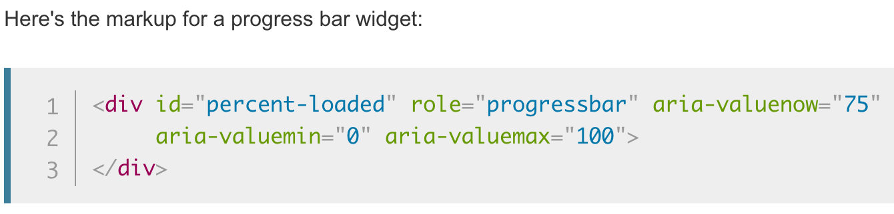

Accessibilty
Accessibility in a system refers to how usable a system is for a user. There are many types of users out there and no two are exactly alike — some users have perfectly adequate vision while others do not, some users operate a system using a standard mouse and keyboard while others are not afforded the same dexterity to be able to operate with these standard tools. It is important to consider all sorts of users when making design decisions. In this page we will focus on two major sets of impairments, physical and visual, and how they should be considered in designing an interface.
Why should I care about accessibility
Because no two users will use a system in the exact same manner, it should at least be possible for all users to have the same experience using a system or not be impeded by it. A very common impairment to consider is vision: many users have different settings for their text sizes on a device, and it is important to consider this when creating a system. If a system is only designed with the standard text sizes in mind, the experience a user may have while using larger text settings will likely suffer. A system should be adaptable to any type of user
Physical Impairments and Keyboard Navigation
Not all users have the same physical capabilities. Some users cannot use a mouse and must use modified keyboard arrangements to utilize a computer system.
When using or designing a system, it is interesting and important to test it with keyboard navigation in mind. Without any additional changes to settings, most webpages can be operated with just a keyboard using the Tab key to navigate between interactable elements and Space or Enter to select the object.
Let's experiment with the following elements. Select the first text box, enter data if you would like, and try tabbing through the objects and using the form without your mouse.
Note that the tab order does not allow the user to navigate to the second element in the form and skips straight to the Send button. While this may only be a mild irritant to a user who uses mouse and keyboard for navigation, consider a user with one functional hand who is only able to use a keyboard for navigation — they are unable to access this element.
It is vital that proper tab orders are set for elements on a page, or else a user who is limited to keyboard navigation cannot navigate the page appropriately — a violation of accessibility.
Visual Impairments
Given that web interfaces are primarily a visual medium, it's important to consider that not all vision is the same. Whether it be color deficiencies or more severe visual impairments, it is important to consider that many users may suffer issues related to vision and that systems should be designed with this in mind.
Screenreaders
Screenreading technology is necessary for some users to navigate a page, due to low or otherwise severely impaired vision. There are a variety of things that must be integrated into a system in order to accommodate screenreading technology well.
Wayfinding and labels with screenreaders
Some major issues when it comes to accommodating screenreaders stems from text labels and wayfinding. With webpages, it is common that there are many hidden elements on a page or some things added for stylistic purposes, which, in turn, can sometimes be seen by a screenreader. This is problematic as it can cause confusion about a system for such a user.
It is possible to add labels to elements that offer more in-depth information about the element or why it is there. HTML has a variety of choices with regard to the frames that are used for elements, such as p for paragraphs or div for general purposes. The issue with some frames, like div, is that they do not offer very much information to screenreaders about the contents. With the various versions of HTML, semantic names for frames have been added, like header for header elements, and these offer more information to the screenreader about the contents.
To combat the issues with non-semantic frames, like div, we can add labels that will offer more information to the screenreader and aid the user with proper wayfinding. The addition of ARIA (Accessible Rich Internet Applications) attributes allows for the addition of more information for a screenreader to give a user for non-semantic or primarily visual elements.
The above image shows an example from the Mozilla developer page for ARIA, which shows a div with various ARIA attributes added for additional information.
"This progress bar is built using a [div], which has no meaning. Unfortunately, there isn't a more semantic tag available to developers in HTML 4, so we need to include ARIA roles and properties. These are specified by adding attributes to the element. In this example, the role="progressbar" attribute informs the browser that this element is actually a JavaScript-powered progress bar widget. The aria-valuemin and aria-valuemax attributes specify the minimum and maximum values for the progress bar, and the aria-valuenow describes the current state of it and therefore must be kept updated with JavaScript."
Source: Mozilla MDN web docs: ARIA
Thus, labels should be used diligently for elements in order to maintain proper wayfinding for users with screenreaders, especially when non-semantic identifiers are used.
Images and screenreaders
On a similar note users with severe visual impairments cannot see images in the same manner as other users. It is important to consider this when using images as a navigational element or as a decorative element. With webpages, using proper alternative text for the images is necessary in ensuring a visually impaired user is able to gather the same information from it as an otherwise normal user.
Per usability.gov's Accessibility Basics page, they state that we . . . should include Alt text in the markup/code; complex images should have more extensive descriptions near the image. The following shows some examples of good and bad practices for alternative text.

Consider the logo for this site, seen in the header and just above here. This is an image which resembles text, and a screenreader normally would not recognize it as such. All that the screenreader would tell a user is the alt data in the HTML.
It is never acceptable to simply add "logo" or nothing for the alt data, as the screenreader would not tell the user any helpful information about the image.
Better alt data for such an image would be something like this: "The Design Byte logo, with design in a dark blue regular font and byte in a dark gray and bold font." This informs the user to what the contents of the image in a descriptive manner, offering similar information to viewing the image.
There are a variety of things to consider with regard to screenreaders and designing systems for accommodating them, and these are just a few. Additional information and resources that can even further develop on these topics will be found below.
Color Deficiencies
Color deficiencies or color blindness refers to issues related to perception of colors. Per colourblindawareness.org, approximately 8% of men suffer from color deficiency. It is far less common for women to suffer from the issue, but with the 8% of men, alone, this is far too large of a population to ignore.
The most common forms of color deficiencies are with relation to the perception of red and green, with around 6% of the men suffering from one of the two varieties of red-green color deficiencies, per color-blindness.com. This means that using red and green to contrast one another in a system could be problematic for a vast number of potential users.
Take a moment to view the following buttons.
While this may be commonplace and these colors are widely agreed to be indicators of these actions, this is a hard sight to view for those with color deficiencies.
This is how such a set of buttons would be seen for someone affected by a deuter type of color deficiency, which makes up 5% of the 8% of men with colorblindness, per color-blindness.com.
And this is how the button set would be perceived by someone affected by a protan type of color deficiency. While this only affects 1% of the overall 8% of colorblind men (color-blindness.com), alongside the other 5% with issues perceiving red and green incorrectly this does make up a large sum of people.
Additional Considerations for Color Deficiencies
Given the manner in which color deficiencies work, there are a few lesser considered problems that come with the issue. Color deficiencies affect the strength of the rod to perceive whichever color is problematic, mainly when differentiating it with other colors. This can be particularly problematic in the realm of display technology, like computer monitors.
In the case of protan color deficiencies, this manifests with pure red on white backgrounds. Consider that red is the pixel activating the red light at 100% capability and white is red, green, and blue at 100%. With a weaker perception of red, there is difficulty with things such as red text being perceived as red when contrasted on a light background.
Resources
There are a wide array of resources available which offer assistance with accessibility, whether it be testing tools or design tools.
Mozilla Firefox Accessibility Inspector
Mozilla Firefox has recently pushed a suite of tools for accessibility testing into the browser. After Firefox version 79, an Accessibility Inspector functionality was enabled by default in web developer tools (i.e. Inspect Element). This functionality is useful in many cases, and being that it is native functionality there is no reason not to use it.

After version 79 of Firefox, the Inspect Accessibility Properties is available within the right-click context menu for any webpage on the Mozilla Firefox browser. This will open the standard developer tools panel for the browser, focussed on the Accessibility pane.
The functionality offers automated and manual checks for various types of issues. The issue types cover Contrast for visual impairments and general visual issues, Keyboard for navigating a page with keyboard controls, and Labels for visual impairments requiring screenreaders

The automated accessibility checks are able to be filtered by the various types of issues that the browser flags.
On top of offering the ability to assess a system’s colors and contrast for visual design, it offers tools to evaluate the tab order for objects, as is important for using keyboard controls with some impairments.

Additional information on the functionality can be found on the Mozilla MDN web docs: Accessibility Inspector Tools page.